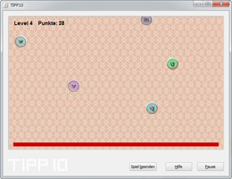

Grundeinstellungen | Inhaltsverzeichnis | Technische Unterstützung
Grundeinstellungen | Inhaltsverzeichnis | Technische Unterstützung 
8. ABC-Spiel
Mit dem ABC-Spiel lassen sich Tastschreibfertigkeiten spielerisch trainieren. Starten Sie das Spiel, indem Sie auf der Startseite das Menü Gehe zu auswählen und dann auf ABC-Spiel klicken.

Ziel des Spiels ist es, herabfallende Buchstaben zu tippen, bevor sie den Boden erreichen. Sobald ein Buchstabe den Boden berührt, ist das Spiel verloren. Für jeden getroffenen Buchstaben erhalten Sie einen Punkt, für jedes falsch getippte Zeichen wird Ihnen ein Punkt abgezogen.
Über die Leertaste wird das Spiel gestartet. Versuchen Sie nun alle erscheinenden Buchstaben möglichst flott zu tippen, um sie vor der Bodenberührung zu schützen. Je höher das Level, desto mehr Buchstaben erscheinen und desto schneller fallen sie herab.
 Grundeinstellungen | Inhaltsverzeichnis | Technische Unterstützung
Grundeinstellungen | Inhaltsverzeichnis | Technische Unterstützung 
© 2006-2011 Tom Thielicke IT Solutions